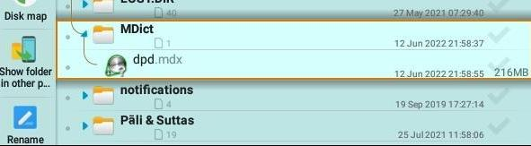

Welcome to Digital Pāḷi Dictionary
DPD is a feature-rich Pāḷi-English dictionary which runs in GoldenDict, or any other application that supports the Stardict format.
It is a work in progress, made available for testing and feedback purposes.
Here's a handy guide to some of the features available in DPD.
Firstly, you need to get GoldenDict installed and setup on your machine (Win / Mac / iOS / Linux / Android) or update once a month if you're already installed.
Next, you should really configure the hotkey if you're on Windows or Mac, or try the scan-popup if you're on Linux. This will allow you to click on any word in any Pāḷi text, and automatically open it in GoldenDict.
There are some powerful advanced features for Goldendict that might be useful to you.
While you're at it, here are some more Pāḷi dictionaries to install in GoldenDict. The combined-dictionary-stardict.zip contains all of them in one file.
If you spot a mistake, or notice something missing, here's where to report it. It generally takes less than a minute.
If you have any bright ideas to make this dictionary even better, or would like to get involved with the project, please get in touch.
Digital Pāḷi Dictionary is licensed under a Creative Commons Attribution-NonCommercial 4.0 International License.

Features
DPD contains five different dictionaries
Pāḷi to English Dictionary (Blue)

Pāḷi Roots Dictionary (Orange)

for more info click here
English to Pāḷi Dictionary (Purple)

Compound Deconstruction Dictionary (Sand)

Abbreviations and Help Dictionary (Green)

DPD recognises 1.1 million unique inflected forms of Pāḷi words
When you select on a word in a Pāḷi text and press the hotkey, DPD automatically recognizes all the headwords to which that inflected form belongs. For example, clicking on takkarassa will automatically open takkara.

100% Dictionary recognition in these books
DPD recognizes all words, both in Chaṭṭha Saṅgāyana Tipiṭaka and Mahāsaṅgīti edition on Sutta Central, including all compounds and sandhis, in the following books:
Vinaya: Pārājikapāḷi , Pācittiyapāḷi
Sutta: Dīgha Nikāya, Majjhima Nikāya, Saṃyutta Nikāya, Aṅguttara Nikāya Books 1, 2, 3, 4, 5
Up Next: Aṅguttara Nikāya Books 6 & 7
Click on everything
One of the great features about GoldenDict is the ability to click on any word to open up the definition of that word. This creates an infinite web of language discovery.
Compact Presentation
All the important Pāḷi information is presented in one compact line, available at a glance. More detailed information is available by clicking the buttons.

Essential information includes the part of speech, case which the word takes, English meaning, literal meaning and simplified construction.
Numbering System
If words with multiple meanings are derived from different sources, their numbering will reflect that.

In the example above, 1.1 and 1.2 both are related to Sanskrit śara , while 2.1 is derived from the root √sar (to make sound), Sansksrit svara.
Grammar
Click the grammar button to get more more detailed grammatical information about the word.

This includes root information, detailed construction, derivative, phonetic changes, compound, antonyms, synonyms, commentarial glosses, non-Indo-Aryan cognates, Sanskrit cognates and Sanskrit root.

If you spot a mistake, please click the link to correct it.
Examples
Click the examples button to see relevant sutta examples of the word.

If you can think of a better example, please let me know!
Declension / Conjugation
Click the declension or conjugation button to see all the inflected forms of a word.

This table is automatically generated using a stem + pattern system, e.g. anicc + o. Irregular inflections have their own unique tables.
Root Family
Click the root family button to see all words which have the same prefix + root.

This information is unique to DPD and is based on a detailed study of the Pāḷi and Sanskrit root system. It's great for getting to know the nuanced range of meanings that a root + prefix combination can display.
Word Family
Click the word family button to see all related words which are not derived from a root, created from the primary word using prefixes and suffixes.

Compound Family
Click the compound family button to see a collection of all the compounds which contain a particular word.

If the headword itself is a compound, all compound families of the component words will be listed.

Word Frequency
Click the frequency button to see a heat map of where & how often a word can be found in the Chaṭṭha Saṅgāyana corpus.

Click here for more detailed information on this interesting feature.
English to Pāḷi Dictionary
You can now access the English to Pāḷi dictionary simply by clicking on any English word in GoldenDict. That brings up a list of exact matches.

Or you can use the search bar to find a word, phrase or idiom. The dropdown list will display all possible options.

Or you can highlight any word, phrase or idiom and use the hotkey.

This feature is designed for beginners struggling with English to Pāḷi exercises, and more advanced students learning to communicate in Pāḷi.
Sinhala, Devanagari and Thai Scripts
Good news for those who read Pāḷi in Sinhala, Devanagari or Thai scripts, DPD recognizes all inflected forms in all three of these scripts.

Transliteration is based on Aksharamukha Script Converter.
Feedback
One of the most important aspects of DPD is the feedback loop. When you spot a mistake, please click the link to correct it. That opens up a Google form which is pre-filled with the headword.

It generally takes less than a minute to log an error, and helps to improve the quality of the dictionary for everyone who uses it.
Wikipedia links
All flowers, trees, plants and unusual animals contain a link to a Wikipedia article for more detailed information on the topic. Indian plants are often used in early Buddhist similes, and a picture is worth a thousand words.

Fonts
If you prefer a sans-serif font, please install Noto Sans, it works well with Pāḷi diacritics. If you prefer a serif font, please install Deja Vu Serif, or Verajja Serif, a specially created font for Pāḷi text.
Word Data's Degree of Completion
As DPD is a work in progress, it is useful to know how complete a word's data is. This is indicated by a gray icon (✓~✗) after the entry.

✓ a gray tick means the word data is mostly complete with contextual meaning, grammar, sutta example and other relevant information.

~ a gray dash means the word data is partially complete with a meaning in context and grammatical construction, but minimal other information.

✗ a gray cross means the word data is still under construction with only an inflection table, frequency table and very basic information.
Enough in theory, here's how to get GoldenDict installed and setup on your machine (Win / Mac / Linux / Android) or update once a month if you're already installed.
Roots Dictionary
There is a detailed Pāḷi Roots Dictionary included in DPD. Clicking on any root will take you to a special page containing all the root information.

Root Info
Root info contains comprehensive information from classical grammars.

Root Matrix
Root matrix lists every word derived from a root, ordered according to part of speech (verbs, participles, nouns, adjectives and adverbs) and according to mode of the verb (causative, passive, intensive, denominative, etc.).

The result is a comprehensive table of how the root appears within Pāḷi texts, useful for teachers and students alike.
Root Families
Each root family contains every word with the same prefix and root.

These are very useful for seeing the range of nuanced meanings that a prefix and root combination produces.
Word Frequency
Clicking the frequency button will give you an instant overview of where & how often a word can be found in the Chaṭṭha Saṅgāyana corpus.

These word frequency maps can provide an instantly accessible snapshot of word usage in different strata of texts, and a entry point for further investigation into how Pāḷi words and associated concepts developed over the course of time.
Matches
The numbers represent exact matches of a headword and all its inflected forms in a section of the corpus.
For headwords in a specific case (e.g. masc locative singular, optative reflexive 3rd plural) only the exact headword will be matched, not any other related inflections.
The colours are a visual representation of the same data - dark blue represents higher word frequency, while the lighter blues show a lower number of occurences.
Non-matches
Partial matches, as found in compounds and in sandhi, are not counted.
A dash "-" indicates 0 instances of a word in that section.
False Positives
All matching inflections are counted, resulting in false positives for words with with identical inflections, e.g. assu (nt nom sg of "tear") and assu (opt 3rd pl of "they could be").
Here follows an explanation of some of the quirks of the Chaṭṭha Saṅgāyana corpus subdivision as represented here.
Vinaya Ṭīkā

Some of the Vinaya Ṭīkā (sub-commentaries) contain overlapping material which cannot be easily assigned to a specific book of the Vinaya, so all Vinaya Ṭīkā are listed under Vinaya Pārājika.
This section includes Sāratthadīpanī-ṭīkā, Dvemātikāpāḷi, Vinayasaṅgaha-aṭṭhakathā, Vajirabuddhi-ṭīkā, Vimativinodanī-ṭīkā, Vinayālaṅkāra-ṭīkā, Kaṅkhāvitaraṇīpurāṇa-ṭīkā, Vinayavinicchaya-uttaravinicchaya, Vinayavinicchaya-ṭīkā, Pācityādiyojanāpāḷi and Khuddasikkhā-mūlasikkhā.
Khuddaka Nikāya

The Khuddaka Nikāya contains much material that differs not only in linguistic style, but also conceptually. It has been divied into three relevant sections for easy reference:
1. Early Wisdom Collection:
These books are mostly consistent with the four nikāyas of the Sutta Piṭaka in language and style.
Khuddakapāṭhapāḷi, Dhammapadapāḷi, Udānapāḷi, Itivuttakapāḷi, Suttanipātapāḷi, Theragāthāpāḷi, Therīgāthāpāḷi, Jātakapāḷi-1, Jātakapāḷi-2.
Please note there are aṭṭhakathā but no ṭīkā for all these books
2. Late Story Collection:
These late books have an easily recognisable flowery style of verse and devotional content.
Vimānavatthupāḷi, Petavatthupāḷi, Apadānapāḷi-1, Apadānapāḷi-2, Buddhavaṃsapāḷi, Cariyāpiṭakapāḷi.
Again, there are aṭṭhakathā but no ṭīkā for these books
3. Commentarial & Abhidhammic Texts:
These late books contain the earliest known exegetical material and the beginnings of Abhidhamma-style analysis.
Mahāniddesapāḷi, Cūḷaniddesapāḷi, Paṭisambhidāmaggapāḷi, Nettippakaraṇapāḷi, Milindapañhapāḷi, Peṭakopadesapāḷi.
Thank you to Ven. Ānandajoti from Ancient Buddhist Texts for his suggestions on the subdivision of the Khuddaka Nikāya.
Aññā
The Aññā section contains a wealth of material from the commentarial era, all the way up to modern times.

Aññā Abhidhamma

All the books which are not diredctly related to the 7 books of the Abhidhamma Piṭaka are included in Aññā Abhidhamma. This section includes summaries and overviews: Abhidhammāvatāro-nāmarūpaparicchedo, the well-known Abhidhammatthasaṅgaho, Abhidhammāvatāra-purāṇaṭīkā, and Abhidhammamātikāpāḷi.
Aññā Visuddhimagga

The Visuddhimagga is included in the Aññā section under aṭṭhakathā, and its commentary under ṭīkā.
Compound Deconstruction and Sandhi Splitting
Some Background
Sandhi compounds are the greatest hurdle to any beginner learning Pāḷi. The rules of sandhi are not absolute rules, only morphing possibilities according to context. These rules are complex and difficult for a beginner to understand.
The situation only gets worse in the commentaries where it is not uncommon to have extremely long compounds, including such monsters as avippavāsasammutisanthatasammutibhattuddesakasenāsanaggāhāpakabhaṇḍāgārikacīvarappaṭiggāhakayāgubhājakaphalabhājakakhajjabhājakaappamattakavissajjakasāṭiyaggāhapakapattaggāhāpakaārāmikapesakasāmaṇerapesakasammutīti, bhattuddesakasenāsanaggāhāpakabhaṇḍāgārikacīvarapaṭiggāhakacīvarabhājanakayāgubhājanakaphalabhājanakakhajjabhājanakaappamattakavissajjakasāṭiyaggāhāpakapattaggāhāpakaārāmikapesakasāmaṇerapesakasammutīnaṃ and āsavavippayuttasāsavasaṃyojanavippayuttasaṃyojaniyaganthavippayuttaganthaniyanīvaraṇavippayuttanīvaraṇiyaparāmāsavippayuttaparāmaṭṭhakilesavippayuttasaṅkilesikapariyāpannasauttaradukāta.
Sandhi is the greatest hurdle facing all forms of computational linguistics related to the Pāḷi canon. At the moment it is blocking any real development in the field.
No-one has cracked this puzzle in any way that comes close to a satisfactory solution.
The only present solution that is in any way useful is the DPR analysis function, which is wrong and misleading as often as it is right. Apparently the method it uses is a system of regex substitutions to remove inflections and reduce compounds to dictionary words.
A New Approach
One of the useful outputs of the Digital Pāḷi Dictionary is a list of inflections for every word in the dictionary. This, together with a set of letter transformation rules has been employed to create a new sandhi-splitting algorithm.
It is still a work in progress and far from perfect - an intelligence will always be required to discern context - but it is better than anything else which currently exists, giving more accurate results and, most importantly, fewer false positives.
For instance, If you open bahalamadhukatelanāgabalapicchillādīnaṃ in DPD, it will show the breakup, which can be clicked on to take you to the relevant words.

Currently this feature is available for the following books in the Pāḷi canon.
- Dīgha Nikāya Book 1 Mūla
- Dīgha Nikāya Book 2 Mūla
- Dīgha Nikāya Book 3 Mūla
- Majjhima Nikāya Book 2 Mūla
- Majjhima Nikāya Book 2 Aṭṭhakathā
More books will be incorporated in the upcoming months.
Grammar Dictionary
This is a very useful side-by-side companion to DPD which performs one simple task.
It displays all possible parts of speech and grammatical information for any word found in the Pāḷi texts, or in compounds.

If you're like me, you probably don't know your inflection tables for reflexive verbs off by heart. No problem, the Grammar Dictionary knows all its tables off by heart.

(If this helps or hinders Pāḷi students remains to be seen : )
GoldenDict Installation
If you use GoldenDict, download the DPD Grammar.zip from this page on Github.
Unzip the folder and place it in your /Documents/GoldenDict folder, alongside the DPD folder.
Restart the application and it wil take a few second to re-index.
MDict Installation
If you use MDict, download DPD Grammar.mdx from this page on Github.
Place the file in the MDict folder on your device, normally /MDict/doc.
Refresh or restart the application.
Install GoldenDict on Windows
In Brief
- download the latest version of DPD here
- install version 1.5 of GoldenDict
- in settings, direct GoldenDict to the DPD folder.
Here is a video to help you with Windows installation courtesy of the Learn Pali Channel on Youtube.
Below are detailed anupubba text instructions.
Install GoldenDict
Download the latest version of GoldenDict from Sourceforge
Go to your Downloads folder and double click GoldenDict-1.5.0-RC2-372-gc3ff15f-Install.exe

Choose your language. Click OK

Click Next

Click I Agree

Choose your install location and click Next.

Click Install

Installing …

Click Finish

Download DPD
Download the latest version of Digital Pāḷi Dictionary from Github.
Make a GoldenDict folder
It is recommended to make an easily accessible GoldenDict folder, for example \Documents\GoldenDict

Unzip
Right-click the DPD zip file in your Downloads folder and click Extract All.

Selct the \Documents\GoldenDict folder and click Extract

There will now be a DPD folder in \Documents\GoldenDict

Setting up GoldenDict
Run GoldenDict from the Start Menu

Open Menu > Edit > Dictionaries (Shortcut F3)

Click Add

Navigate to \Documents\GoldenDict and click Select Folder
Tick the Recursive check-box (this makes sure all subfolders get added)

Click OK

Wait while the dictionary gets indexed.

You're all setup!
Next learn how to set up the hotkey so you can click on any Pāḷi word in any text and open it immediately in the dictionary.
Install GoldenDict on Mac
In Brief
- download the latest version of DPD here
- install version 1.5 of GoldenDict for OS X 10.9 Mavericks onwards or OS X 10.12 Sierra onwards
- in settings, direct GoldenDict to the DPD folder.
Below are detailed anupubba instructions.
Download GoldenDict
If you are using OS X 10.9 Mavericks or later download this version of GoldenDict from Sourceforge.
If you are using OS X 10.12 Sierra or later download this version of GoldenDict from Sourceforge.
More information about the latest Mac version of GoldenDict is available here.
Install GoldenDict
Double click the GoldenDict .dmg file in your Downloads folder.

Double click the installer.

You'll probably get a security warning like this.

Click cancel and open Security and Privacy Preferences. Click on the lock at the bottom left corner. Then choose “Open anyway” and GoldenDict will open. Click Open Anyway.

Click Open on the next security warning.

Ok, you're installed. Now let's add a dictionary.
Download DPD
Download the latest version of Digital Pāḷi Dictionary for GoldenDict from Github into your Downloads folder.
Unzip
Find the .zip file in your downloads folder and unzip it.

Make a GoldenDict folder
It is recommended to make an easily accessible GoldenDict folder, for example /Documents/GoldenDict

Copy the unzipped DPD folder into /Documents/GoldenDict

Adding Dictionaries to GoldenDict
Launch the GoldenDict application.
Go to Menu > Edit > Dictionaries (Shortcut F3).

Go to Sources > Files. Click Add.

Select the folder /Documents/GoldenDict.

Click the recursive tick box √ (this makes sure GoldenDict searches in subfolders).

Click Rescan now or OK and wait a few moments while the dictionaries are indexing.

You're all setup!
Next learn how to set up the hotkey so you can click on any inflected Pāḷi word in any text and open it immediately in the dictionary.
Install MDict on iOS
In Brief
- download the latest version of DPD for MDict (dpd.mdx) here.
- install MDict from the App Store
- Move the dpd.mdx file to the MDict folder on your iOS device.
Below are detailed anupubba instructions.
Download DPD
First things first, download the latest MDict version of Digital Pāḷi Dictionary from Github
Download MDict
Search for MDict in your device's App Store and click GET to install

Install the DPD File
There are 2 ways to install.
Put the dpd.mdx file into your Library, it will install automatically.

Or open the Files application

and move the dpd.mdx file to the MDict folder in On My iPhone

Open MDict
You should be able to use DPD by searching now.

Auto Lookup Settings
In Settings turn on Auto lookup clipboard. Now you can copy any word in a Pāḷi text to automatically open it in MDict.

One Click Settings in DPR
As an added bonus, if you use Digital Pāli Reader, open Settings and turn on Copy words to clipboard on click.

Now simply clicking on any word should open it in MDict.

You're all good to go on your iOS device!
Install GoldenDict on Linux
In Brief
- download the latest version of DPD here
- install version 1.5 of GoldenDict
- in settings, direct GoldenDict to the DPD folder.
Below are detailed anupubba instructions.
Download DPD
First things first, download the latest version of Digital Pāḷi Dictionary from Github.
Make a GoldenDict folder
It is recommended to make an easily accessible GoldenDict folder, for example /Documents/GoldenDict

Or in the terminal
mkdir /home/your_user_name/Documents/GoldenDict
(Obviously, substitute your_user_name with your actual user name)
Unzip
Right-click the DPD zip file in your Downloads folder and open it with Archive Manager.

Click Extract and select the folder /Documents/GoldenDict

Or in the terminal:
cd home/your_user_name/Downloads
unzip /home/your_user_name/Downloads/dpd.zip -d /home/your_user_name/Documents/GoldenDict
Install GoldenDict
GoldenDict can be installed directly with apt-get:
sudo apt-get update
sudo apt-get install goldendict
Or choose the distribution of your choice from https://pkgs.org/download/goldendict:
Or directly from the Software Manager:

Make sure to install version 1.5, not version 1.0!
Adding Dictionaries to GoldenDict
Launch the GoldenDict application
Go to Menu > Edit > Dictionaries (Shortcut F3)

Go to Sources > Files.
Click Add and select folder /Documents/GoldenDict

Click the recursive tick box √ (this makes sure GoldenDict searches in subfolders)

Click OK and wait a few moments while the dictionaries are indexing.
You're all setup!
Next learn how to setup the hotkey or scan popup so you can click on any Pāḷi word in any text and open it immediately in the dictionary.
Install MDict on Android
MDict on Android has the advantage of instant lookup by selecting and copying a word. Or if you use DPR, simply by clicking any word.
In Brief
- download the latest MDict version of DPD from Github
- download and install MDict from Google Play Store or the MDict website
- copy DPD to the MDict folder
Below are detailed anupubba instructions.
Download DPD
First things first, download the latest MDict version of Digital Pāḷi Dictionary from Github
Download MDict
Download and install MDict from the Google Play Store OR from the MDict website


Copy the dpd file to the MDict Folder
Using any file manager, make an MDict/doc folder on your SD card.
(That's a folder called MDict and a subfolder called doc.)
Copy dpd.mdx file into the MDict/doc folder.

Setup MDict
You should get this splash screen the first time you run MDict

Open the Library.

Check that DPD is the library.

Select Groups > All. This is important if you want to see all definitions of a word.

Open Settings.

Click on Lookup.

Ensure Global Clipboard Monitor is turned on. This allows anything copied to the clipboard to be opened in MDict.

Hold down any Pāḷi word in any text to select it, clicking copy opens it in MDict.

DPR Settings
As an added bonus, if you use Digital Pāli Reader, open Settings and turn on Copy words to clipboard on click. Now simply clicking on any word should open it in MDict.

You're all set up on Android!
Install GoldenDict on Android
GoldenDict on Android can be accessed by highlighting a word in a text and clicking Share in the conext menu. It also has a dark mode.
In Brief
- download the latest version of DPD here
- install GoldenDict from the Google Play Store
- copy DPD to the GoldenDict folder
Below are detailed anupubba instructions.
Download DPD
First things first, download the latest version of Digital Pāḷi Dictionary from Github
Download GoldenDict
Download and install GoldenDict from the Google Play Store

Copy the DPD Folder
Using any file manager, copy the DPD folder into the GoldenDict folder. You can find that in the root directory, or on your SD card if you have one.

Run GoldenDict
When you run the GoldenDict app, a message will come up telling you that the dictionary needs to be indexed. Click Proceed.

When the indexing is finished, click Done.

You're all set up!
You can access DPD at any time from any app by selcting a word, holding it until the options menu comes up, and clicking Share > GoldenDict.

Update Digital Pāḷi Dictionary
A new version becomes available every full moon uposatha day.
Updating is very easy. In brief:
- download the latest version of DPD
- copy it to your GoldenDict folder, entirely replacing the old version
Updating on Windows
- Download the latest DPD zip file from Github.
- Unzip the DPD folder and copy it to your GoldenDict folder.
\Documents\GoldenDict - Make sure to replace all the contents of the old DPD folder.
- EITHER close GoldenDict completely and re-open it (make sure it's not active in your system tray)
OR go to Edit > Dictionaries (Shortcut F3) and click rescan now and OK. OR the shortcut Ctrl-F5 may also work to re-scan.

Updating on Mac
- Download the latest DPD zip file from Github.
- Unzip
- Copy the DPD folder to your /Documents/GoldenDict folder, entirely replacing the old one.
- Quit GoldenDict and restart it OR the shortcut Apple-F5 may also work to re-scan.
- You should get a message that DPD is indexing... success!
Enjoy the most up-to-date Pāḷi information!
Setup the Hotkey
Whehter you use Sutta Central, Digital Pāli Reader, Tipitaka Pali Projector, Tipitaka.app, PDF documents or any other source of Pāḷi texts, this allows you to click on a word and open it immeditely in the dictionary.
Go to Menu > Edit > Preferences (Shortcut F4) > Hotkeys

Choose your preferred hotkey and click OK. The default Ctrl-C-C works nicely, there's no need to change it.

Double click to highlight any Pāḷi word in any software or pdf and press the hotkey. A small GoldenDict window will open. DPD will automatically find any inflected word in the dictionary.

If you prefer, you can open the word in the main window every time.
- Go to Menu > Edit > Preferences (Shortcut F4) > Scan Popup
- Select "Send translated word to main window"

If you're a Digital Pāli Reader user, you can enable hotkey with a single click in the preferences
- Open DPR preferences (shortcut %)
- Select "Copy words to clipboard on click"

Of course you can also search for Pāḷi words the old-fashioned way ...
- Go to Menu > View and click Search Pane (Shortcut Ctrl-S)
- Start typing in the Search Bar and click the word you are looking for.
- No need to use diacritics when typing in GoldenDict, it will automatically find what you are looking for.

If you're on Linux, also try out the scan popup - it allows you to open a word in the dictioanry with a single click.
Setup the Scan-pop
Scan popup works best on Linux. Mileage may vary on other operating systems.
In GoldenDict, open Edit > Preferences (Shortcut F4)

Go to the Scan Popup tab and enable scan popup functionality. With these settings every word you click on will open in the dictionary

If that setting is a little extreme for you, try the setting in the pic below.

Now, when you click a word in a Pāḷi text, a small dictionary icon will appear. Click it to open the word in the dictionary.

The settings I personally use are in the pic below. This opens the scan popup in the main window by pressing Alt-Shift.

Please experiment to find the settings that are comfortable for you.
Next, take a look at how to setup some advanced features in GoldenDict.
Setup Advanced Features in GoldenDict
Ctrl-click to open a word in a new tab
Clicking on any word opens it in the same tab. Ctrl-clicking on any word opens it in a new tab, allowing you to browse multiple words at once.

Adding other dictionaries
To add more dictionaries to GoldenDict, simply download any dictionary in a GoldenDict compatible format (Stardict, Babylon, Lingoes, etc.) and add that folder to your GoldenDict folder Documents/GoldenDict.
There are a number of Pāḷi dictionaries available for GoldenDict, try Simsapa for a start. You can install them individually, or combined-dictionary-stardict.zip contains all dictionaries.
Search in page
To find a specific word on the page, use the shortcut Ctrl-F, or go to Menu > Search > Search in Page.
That will open a dialgue box allowing you to quickly find the specfic word you are looking for on the page.

Making groups
When you have multiple dictionaries spanning multiple languages installed, it is recommended to make Groups.
Go to Edit > Dictionaries (Shortcut F3) and click the Groups tab. Make a new group and drag and drop dictionaries to the group.

The group will now appear in a dropdown list on the main page.

This helps to limit search results, which is imporotant for full-text searches.
Full-text search
Normal searching only looks for headwords, but full-text search examines the entire contents of every entry.
First select the Group that you would like to search in, otherwise you will be overwhelmed with too many results.
Then open Menu > Search > Full-text search (Shortcut Ctrl+Shift+F).

This opens up a dialogue box.
Select the mode you would like to use:
- Whole words finds entire words (needs to be 4 or more letters long)
- Plain text finds any part of a word (needs to be 4 or more letters long)
- Wildcards is like plain text with the use of wildcards like *
- Regex allows for very accurate serching using Regular Expressions.

You can also enter multiple words, and they will be found even if they not adjacent to each other.
Other options are:
- When searching for multiple words, Max distance between words (0-15) limits the distance between the words.
- Max articles per dictionary (1-10000) limits the number of results per dictionary.
- Ignore words order does just that. Keep this ticked.
- Match case ignore capitalization.

Dark mode
You can install a dark mode for GoldenDict by following the instructions here.
While you're at it, install the Dark Reader Chrome extension for a Pāḷi reading experience that is comfortable on old eyes.

Changelog
2023-01-06
- 70 015 headwords, 26 004 complete, 15 648 partially complete, 28 363 incomplete entries
- 742 roots, 2 871 root families, 28 476 words derived from roots
- 14 107 deconstructed compounds
- 1 414 089 unique inflected forms
- 1 229 213 cells of Pāḷi data
- 100% dictionary recognition up to and including Aṅguttara Nikāya Book 3
- New button called Word Families, more informtation here
- Added Bibliography and Thanks on the website and in the dictionary
- Updated icons for degree of completition, more info here
- Minor aesthetic changes to lists
- Many corrections and additions based on user feedback.
2022-12-08
- 69 322 headwords, 25 997 complete, 14 886 partially complete, 28 439 incomplete entries
- 743 roots, 2 845 root families, 28 140 words derived from roots
- 22 031 deconstructed compounds
- 1 368 689 unique inflected forms
- 1 213 274 cells of Pāḷi data
- 100% dictionary recognition in Saṃyutta Nikāya books 4 & 5, Aṅguttara Nikāya Books 1 & 2
- New categories added to Root Matrix (deno caus & pass)
- Root Matrix now completed, click here for more info
- Many corrections and additions based on user feedback.
2022-11-08
- 68 088 headwords, 25 971 complete, 13 529 partially complete, 28 588 incomplete entries
- 742 roots, 2 833 root families, 27 886 words derived from roots
- 20 677 deconstructed compounds
- 1 342 860 unique inflected forms
- 1 193 219 cells of Pāḷi data
- 100% dictionary recognition in Pācittiyapāḷi and Saṃyutta Nikāya book 3
- Improved recognition of Sinhala, Devanagari and Thai scripts.
- Many corrections and additions based on user feedback.
2022-10-10
- 66 423 headwords, 25 961 complete, 11 808 partially complete, 28 654 incomplete entries
- 743 roots, 2 820 root families, 27 612 words derived from roots
- 20 825 deconstructed compounds
- 1 289 793 unique inflected forms
- 1 169 282 cells of Pāḷi data
- 100% dictionary recognition in Vinaya Book 1 Pārājikapāḷi
- removed extremely long words (> 30) from compound families
- fixed declensions feedback link
- Many corrections and additions based on user feedback.
2022-09-10
- 65 077 headwords, 25 919 complete, 10 211 partially complete, 28 947 incomplete entries
- 741 roots, 2 807 root families, 27 122 words derived from roots
- 17 303 deconstructed compounds
- 1 264 558 unique inflected forms
- 1 144 606 cells of Pāḷi data
- 100% dictionary recognition of words from Dīgha Nikāya upto Saṃyutta Nikāya Sakkasaṃyuttaṃ.
- Added all variant readings and variant spellings found in Sutta Central texts from Dīgha Nikāya upto Saṃyutta Nikāya Sakkasaṃyuttaṃ.
- Added system to show degree of completion of each word's data. more info here.
- Many corrections and additions based on user feedback.
2022-08-12
- 64 141 headwords, 25 904 complete, 9 207 partially complete, 29 030 incomplete entries
- 742 roots, 2 786 root families, 26 798 words derived from roots
- 16 213 deconstructed compounds
- 1 239 710 unique inflected forms
- Added Root Matrix. more info here
- 100% dictionary recognition of words in Dīgha Nikāya Mūla, Majjhima Nikāya Mūla and MN2 Aṭṭhakathā.
- Changed word frequency generation process to reduce file size
- Inflection table words not in CST are grayed out.
- Stylist changes to html of roots families, compound families, sets, inflection tables, frequency tables
- Many corrections and additions based on user feedback
2022-07-13
- 62 816 headwords, 1 211 561 unique inflected forms, 25 883 complete entries, 736 roots, 2 711 root families, 14 639 deconstructed compounds
- Added DPD Grammar Dictionary more info here
- Improvements to Sandhi Splitting Algorithm more info here
- Updates to DPD MDict for iOS and Android
- 100% dictionary recognition of words in Dīgha Nikāya Mūla Books 1-3, Majjhima Nikāya Mūla Book 2 and Aṭṭhakathā Book 2
- Many corrections and additions based on user feedback.
2022-06-14
- 59 066 headwords, 1 130 563 unique inflected forms, 25 880 complete entries, 733 roots, 2 659 root families
- MDict version for iOS and Android
- Added compound deconstruction and sandhi splitting dictionary. Tested with MN 51-100 mūla and aṭṭhakathā
- Corrections and additions based on user feedback.
2022-05-15
- 57 478 headwords, 1 176 522 unique inflected forms, 25 851 complete entries, 733 roots, 2 602 root families
- Corrections and additions based on user feedback.
2022-04-16
- 56 729 headwords, 1 153 773 unique inflected forms, 25 343 complete entries, 729 roots, 2 568 root families
- Added an English to Pāḷi dictionary. check features on the website for more info.
- Added recognition of Thai script.
- Added Sets to display a list of words grouped by a theme, e.g. bodyparts.
- Added click-to-display for all abbreviations.
- Added click-to-display for all help topics.
- Corrections and additions based on user feedback.
2022-03-17
- 55 782 headwords, 1 129 355 unique inflected forms, 24 779 complete entries, 726 roots.
- Added a word frequency map for every headword. More information available here.
- Added missing words from New Concise Pāli English Dicitonary and Devamitta Pāli Study, complete with inflection tables.
- Added sutta titles for quick lookup.
- Fixed compound familes for prefixes and suffixes.
- Many minor corrections and additions based on user feedback
2022-02-16
- 45 702 headwords, 24 085 complete entries, 718 roots.
- New webpage digitalpalidictionary.github.io.
- Updated inflection tables for all headwords in an unusual cases.
- Lots of minor corrections and updates from user feedback.
2022-01-18
- New buttons
- Roots dictionary
- Roots families
- Compound families
- Feedback Form
DPD Bibliography
(An incomplete bibliography)
Pāḷi Dictionaries
Cone, Margaret, 2001. A Dictionary of Pāli Part I a-kh, Oxford: Pāli Text Society
Cone, Margaret, 2010. A Dictionary of Pāli Part II g-n, Oxford: Pāli Text Society
Cone, Margaret, 2020. A Dictionary of Pāli Part III p-bh, Oxford: Pāli Text Society
Trenckner, V, et al., 1925 -2010. A Critical Pāli Dictionary, Copenhagen: The Royal Danish Academy, accessed through https://cpd.uni-koeln.de/
Sanskrit Dictionaries
Apte, V. S., 1890. The Practical Sanskrit-English Dictionary, Poona: Shiralkar & Co, accessed through www.sanskrit-lexicon.uni-koeln.de
Edgerton, Franklin, 1953. Buddhist Hybrid Sanskrit Grammar And Dictionary Vol. II: Dictionary, Delhi: Motilal Banarsidass Publishers, accessed through www.sanskrit-lexicon.uni-koeln.de
Monier-Williams, Sir Monier, 1899. A Sanskrit-English Dictionary: Etymologically and Philologically Arranged with Special Reference to Cognate Indo-European languages, Oxford: Clarendon Press, accessed through www.sanskrit-lexicon.uni-koeln.de
Software
This project has been created entirely with open source software.
Anki, downloaded from https://apps.ankiweb.net/
Beautiful Soup, downloaded from https://pypi.org/project/beautifulsoup4/
Libre Office, downloaded from https://www.libreoffice.org/
Linux Mint, downloaded from https://linuxmint.com/
Natural Language Toolkit, downloaded from https://www.nltk.org/
Pandas, downloaded from https://pandas.pydata.org/
Tipiṭaka Pāḷi Projector, downloaded from https://github.com/bksubhuti/Tipitaka-Pali-Projector
Python, downloaded from https://www.python.org/
SQLite, downloaded from https://www.sqlite.org/index.html
Visual Studio Code, downloaded from https://code.visualstudio.com/
Websites
Digital Pāli Reader, https://www.digitalpalireader.online/
Github, https://github.com/
Sanskrit Grammarian, https://sanskrit.inria.fr/DICO/grammar.fr.html
Sutta Central, https://suttacentral.net/
Wikipedia, https://en.wikipedia.org/wiki/Main_Page
DPD Thanks
Thank you, appreciationa and anumodana to the following people who have contributed to this project with their time, expertise and with material support.
parapaṭibaddhā me jīvikā'ti pabbajitena abhiṇhaṃ paccavekkhitabbaṃ.
Ven. Sumedhāloka, for sparking my interest in Pāḷi studies
Ven. Ariyananda, for a powerful laptop
Ven. Devamitta, for thousands of small corrections and suggestions for improvement
Ven. Gambhīro, for the technical expertise, and the GoldenDict exporter that started this whole chain of events
Prof. Bryan Levman, for detailed grammatical analysis of Dīgha Nikāya and Theragāthā
Prof. Aleix Ruiz Falqués, for internet classes on the classical Pāḷi grammars
Sumukha, for the Python technical support helpline
Inka Kendzia, for paying the internet bill
Max, for paying the internet bill
Son Tu, for detailed grammatical feedback
Everyone who has made suggestions through the feedback form
Anyone who I have erroneously forgotten to thank
Monasteries
Thank you to all the monasteries which have sustained me during the course of this work
Na Uyana Dharmayatana, Melsiripura, Sri Lanka
Hindagala Meditation Centre, Kandy, Sri Lanka
Sri Sumedha Meditation Center, Gomara, Sri Lanka
University Viharaya, Peradeniya, Sri Lanka
Ulpathkanda Buddhist Monastery, Kandy, Sri Lanka
Navimana Forest Meditation Centre, Warakapola, Sri Lanka
Sri Pada Aranya Senasanaya, Pelmadulla, Sri Lanka
Feedback Form
Did you spot a mistake in the dictionary? Find something missing? Please report it using the feedback form. It generally takes less than a minute and your corrections and suggestions help to improve the quality of this dictionary for everyone who uses it.
There are feedback forms inside the dictionary which will auto-fill the required fields. Juct click on them directly. There is one in the grammar section.

And another one in the inflection tables if you spot something wrong there.

And also another one when you open the feedback button.

Contact
Please get in touch by email if
- you have any bright ideas to improve this dictionary.
- you are a coder and would like to get involved in the development of this project.
- you would like to contribute to the project in any way.
For anything else, please use the Feedback Form